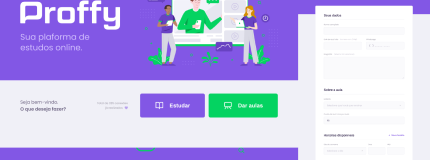
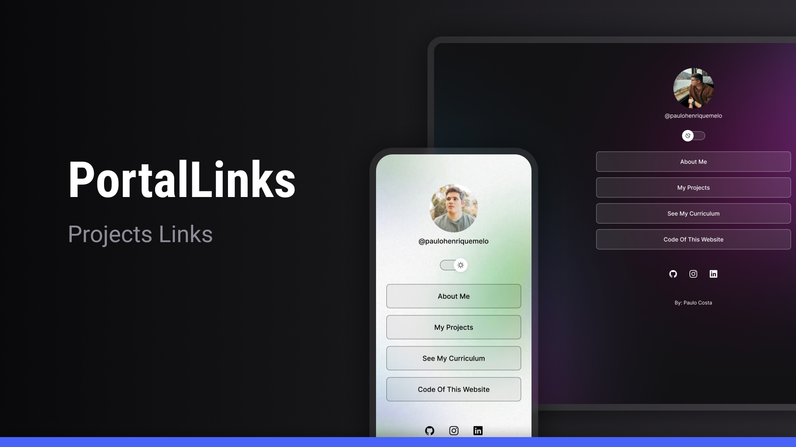
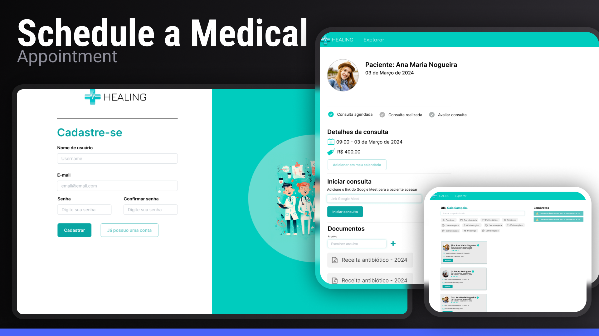

@paulohenriquemelo
Desenvolvida com HTML, CSS e JavaScript, esta aplicação web tem como objetivo ser uma plataforma de estudos. Professores e alunos podem se cadastrar para oferecer ou participar de aulas.

- Veja o código aqui
A aplicação foi desenvolvida para fins acadêmicos, com o objetivo de interagir com usuários de redes sociais que podem estar expostos a fake news. Com base em um modelo de dados, a aplicação permite que os usuários insiram um título de notícia e verifiquem sua autenticidade. A resposta é fornecida com uma precisão baseada em um modelo treinado utilizando técnicas de aprendizado de máquina.
- Veja o código aqui
Um aplicativo projetado para criar um portal que reúne todos os seus links essenciais em um só lugar—seja de redes sociais, sites ou qualquer outra plataforma. O objetivo é facilitar ao máximo a navegação dos usuários e o acesso às principais plataformas de alguém, assim como o LinkTree. Desenvolvido com HTML, CSS e JavaScript.

- Veja o código aqui
Aplicação desenvolvida utilizando o framework Django com Python, HTML, CSS e JavaScript, integrada a um banco de dados SQLite. O objetivo foi criar uma interface gráfica para o gerenciamento de consultas médicas, oferecendo duas perspectivas principais: uma para os pacientes agendarem suas consultas e outra para os médicos visualizarem seus horários e atendimentos marcados.

- Veja o código aqui
Meus Projetos
Proffy - Study Platform
Fake News Detector - Python

Portal Links - WEB
Appointment - WEB / APP